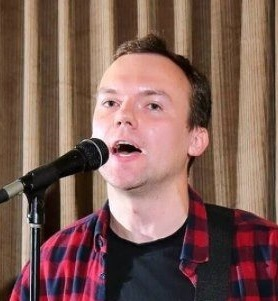

I'm Anton Kuznietsov, a full-stack Python developer. My latest project is KuantorFlow, a language-learning platform with an AI study companion built on the Anthropic Claude API — designed, built, and deployed end to end with Flask, MySQL, and JavaScript on PythonAnywhere.
Before that I spent more than a decade in software: C++ game development at Gameloft, then years of test automation for enterprise storage, most recently at Software Aspekte. That background shows in my demos — a billiards physics simulation with collision math written from scratch and a Web Audio synthesizer you can play from your keyboard.
I hold a Master's degree in Mathematics from Kharkiv Karazin National University, and before engineering I sang as a baritone in the Kharkiv Philharmonic Choir — hence the Space Oddity cover on the main page.